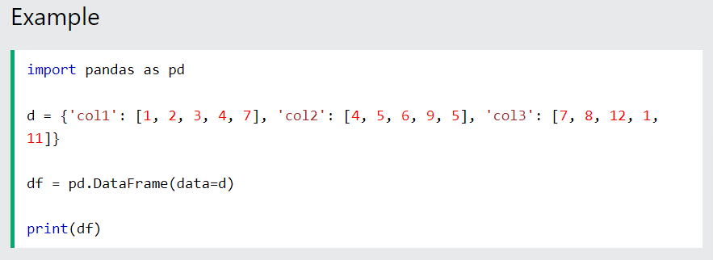
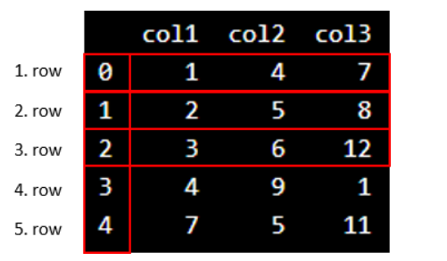
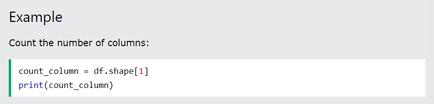
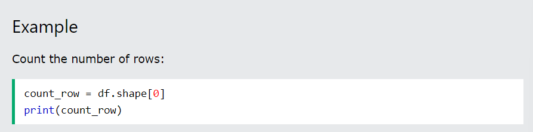

A data frame is a structured representation of data.
Let's define a data frame with 3 columns and 5 rows with fictional numbers:
We write pd. in front of DataFrame() to let Python know that we want to activate the DataFrame() function from the Pandas library.
Be aware of the capital D and F in DataFrame!
This is the output:
We see that "col1", "col2" and "col3" are the names of the columns.
Do not be confused about the vertical numbers ranging from 0-4. They tell us the information about the position of the rows.
In Python, the numbering of rows starts with zero.
Now, we can use Python to count the columns and rows.
We can use df.shape[1] to find the number of columns:
We can use df.shape[0] to find the number of rows:
If we work with larger data sets with many columns and rows, it will be confusing to count it by yourself. You risk to count it wrongly. If we use the built-in functions in Python correctly, we assure that the count is correct.